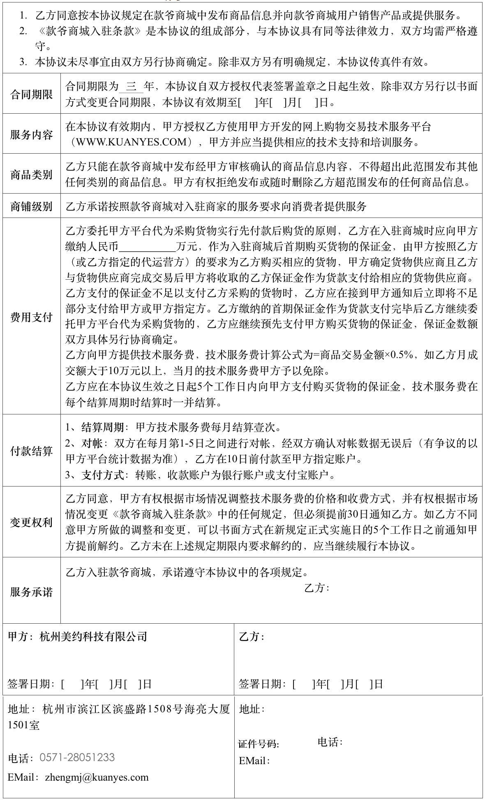

《款爷商城入驻条款》见附件。
附件1：款爷商城入驻条款
1. 定义解释
1.1 在本协议中，除非另有明确规定，否则下列词语应具有如下含义：
(a)款爷商城（www.Kuanyes.com）：指甲方开发的网上购物交易技术服务平台，是甲方网站中一个重要栏目。
(b)买家：指在款爷商城向乙方购买商品或服务的用户。
(c)技术服务费：甲方根据确认交易收取的技术服务费用，此费用不包括网上支付涉及的银行交易手续费，也不涉及配送费用。
(d)网上货款：指买家使用网上支付系统购买乙方销售之商品所产生的货款。
(e)确认交易：指买家在款爷商城向乙方购买商品，并通过款爷商城提供之后台系统确认收货的交易。
(f)“甲方关联企业”指控制甲方或被甲方所控制的、或与甲方共同受控制于同一实体的任何企业。控制是指直接或间接拥有该企业百分之五十（50％）以上的股权、投票权或管理权。
1.2 本协议中的标题仅为方便阅读而设，不应影响本协议任何条款的解释。
2 主体资格
2.1 乙方向甲方声明、陈述和保证如下：
(a)其是合法设立并有效存续的公司或具有完全民事行为能力的个人；
(b)其有资格从事本协议项下之交易；
(c)其有能力履行其于本协议项下之义务；并且履行义务的行为不违反任何对其有约束力的法律文件中的任何规定；
(d)其并非清算、解散或破产程序之主体。
2.2 本协议一经签署即构成对各方合法、有效并可依本协议之条款强制执行的义务。
3. 技术服务
3.1 甲方负责款爷商城的建设、维护、运行和管理，为乙方在款爷商城发布商品信息及销售商品提供双方在本协议中约定的技术服务。
3.2 甲方仅负责向乙方提供本协议规定的技术服务，除此之外与乙方销售商品有关的一切事务(包括但不限于发货、维修、质量保证、退换货等)均应由乙方负责。无论由于何种原因使甲方为乙方承担上述责任而遭受损失，乙方均应向甲方提供全面足额的赔偿。如果乙方需要甲方提供额外的服务(包括但不限于推广服务等)，乙方需要支付额外费用，具体甲乙双方另行确定。
4. 费用支付
乙方应于服务开通之前，按照《款爷商城入驻协议》中的规定向甲方预存货款、技术服务费等相关费用。甲方有权根据乙方每月确认交易，调整技术服务费金额标准。
乙方预存的货款在向甲方申请购买货物后不得申请退回，但甲方自愿对乙方货物进行回购的除外。
5. 收入监管制度
5.1 乙方在款爷商业销售所获得的收入，乙方应当要求消费者通过甲方的支付系统进行支付，由甲方在扣除相关费用和款项后将剩余款项支付给乙方。
5.2 乙方除自行支付入驻商城所需缴纳的货款外，可以向甲方的合作贷款机构（含互联网金融平台，下同）申请借款，乙方在甲方合作的贷款机构借款缴纳货款后，不可撤销的同意甲方按照贷款机构的申请对乙方的资金（含货款及销售收入）进行监管。如乙方发生借款项目到期的，乙方同意甲方按照贷款机构的申请对乙方的资金直接予以划扣用于还款。
5.3 乙方如在申请贷款的同时申请甲方合作的担保公司提供担保的，乙方应当支付的担保费也一并由甲方从乙方的资金账户中予以划扣，但应当征得乙方同意。
6. 商品销售
6.1 乙方使用甲方提供的网店管理系统按甲方要求在款爷商城建立网上店铺，经甲方审核，发布和管理商品信息,买家和甲方共同拥有商品信息的使用权。
6.2 乙方应保证其在款爷商城网上店铺中的商品信息合法、真实、准确。如因乙方提供的商品信息存在问题而引起任何纠纷，乙方应负责解决；如给甲方造成任何损失，乙方应当负责赔偿。
6.3 甲方有权审核乙方提供的商品信息，对不符合法律、法规或甲方有理由相信如果发布将给甲方带来不利影响的商品信息，甲方有权要求乙方进行修改，也有权拒绝发布或删除该信息。
6.4 乙方在款爷商城上销售的商品应是销路好、质量好、性价比高的商品；同时乙方必须保证提供至少10款特价促销产品(同型号低于任何平台、不高于以往任何时候最低价格的促销产品)在线销售，以利于提升销售人气和销量。
6.5 乙方保证其在款爷商城的商品零售价格低于乙方在其他渠道销售时的零售价格，否则甲方有权拒绝发布或删除该商品信息。
6.6 乙方必须按照其经营范围在款爷商城销售相应的商品和服务，并保证有关商品和服务本身的合法性。如因乙方非法经营而引起任何法律纠纷，乙方负责解决；如给甲方造成损失，乙方应负责赔偿。
7. 商品配送
7.1 乙方应自行安排向买家提供商品配送服务，但应当保证配送服务质量。
7.2 因配送问题，乙方与买家产生纠纷，乙方应负责解决；如给甲方造成损失，乙方应负责赔偿。
8. 商铺运营管理
甲方为乙方提供的网上购物交易技术服务平台---商家商铺的日常运营管理由乙方全权负责，为了保证提供良好的服务质量，乙方必须做到以下几点，否则乙方按合同相应约定承担责任：
8.1 乙方需要保证店铺在正常运营时间的咨询电话及QQ等及时畅通（占线除外），如果超过5次/月（含）用户投诉至款爷商城平台，商家电话或QQ无法接通，则甲方有权关闭其店铺，并终止合同；
8.2 乙方需要保证店铺里留言咨询信息6小时内及时回复，否则甲方将按50元/条给予处罚，直接从交易金额里扣除；如超过5条/月（含）未处理留言信息，甲方按相应金额处罚外，并有权关闭其店铺，并终止合同；
8.3 乙方需要保证非定制产品在24个小时内完成有效支付订单配送工作和完善商铺后台支付订单的配送状态；定制产品按乙方承诺的时间内完成有效支付订单配送工作和及时完善商铺后台支付订单的配送状态，因发货不及时、订单状态修改不及时，导致买家投诉至甲方（款爷商城），则视为对乙方有效投诉1次，甲方按相应规定处罚外，并有权责成乙方及时处理好投诉，直到用户满意；
8.4 乙方需要保证针对买家投诉（配送、商品质量、售后服务问题等）必须在6个小时内给予积极处理，并反馈给买家满意处理结果，如果买家不满意，投诉至甲方（款爷商城），则视为对乙方有效投诉1次，甲方按相应规定处罚外，并有权责成乙方及时处理好投诉，直到用户满意；
8.5 如果乙方有超过3次/月（含）以上有效投诉，甲方将按100元给予乙方处罚，直接从交易金额里扣除；如果乙方有超过6次/月（含）以上有效投诉，甲方按相应规定处罚外，并有权关闭其店铺，并终止合同；
9. 恶意竞争
9.1 本协议中所称的恶意竞争行为包括但不限于：
(a)中国相关法律规定的不正当竞争行为；
(b)仅以低价格展示产品，却对买家的订单采取无货处理；或低价展示之产品无相关配件无法使用的恶意降价行为。
9.2 乙方不得在款爷商城从事任何恶意竞争行为。如乙方被确认有任何恶意竞争行为，甲方有权单方暂停或终止与乙方的合作，并无需退还乙方已向甲方交纳的所有费用。
10. 税款缴纳
10.1 双方应各自按照有关法律法规和国家政策的规定向有关的税务机关纳税。
10.2 如一方为另一方代付了任何税款，代付方应当尽快将缴税证明提交给应付方，应付方应于收到代付方提交的缴税证明后七日内向代付方返还等额款项。
11. 保密条款
11.1 任何一方对于因签署或履行本协议而了解或接触到的对方的机密资料和信息（以下简称“保密信息”）均应保守秘密；非经对方书面同意，任何一方不得向第三方泄露、给予或转让该等保密信息。
11.2 如对方提出要求，任何一方均应将载有对方保密信息的任何载体，按对方要求归还对方，或予以销毁，或进行其他处置，并且不得继续使用这些保密信息。
11.3 在本协议终止之后，各方在本协议项下的义务并不随之终止，各方仍需遵守本协议之保密条款，履行其所承诺的保密义务，直到其他方同意其解除此项义务，或事实上不会因违反本协议的保密条款而给其他方造成任何形式的损害时为止。
12. 利益冲突
12.1 在本协议有效期内，如有任何甲方或甲方关联企业在职员工成为乙方的股东或者高级管理人员，乙方必须立即书面通知甲方法律部门，如乙方故意隐瞒此情况，甲方有权随时提前终止乙方的业务而无需承担任何责任，由此造成的全部损失由乙方自行承担。
13. 违约责任
13.1 任何一方直接或间接违反本协议的任何条款或不承担或不及时、充分地承担本协议项下其应承担的义务构成违约行为，守约的一方（“守约方”）有权以书面通知要求违约的一方（“违约方”）纠正其违约行为并采取充分、有效、及时的措施消除违约后果并赔偿守约方因违约方之违约行为而遭致的损失。
13.2 在违约事实发生以后，经守约方的合理及客观的判断该等违约事实已造成守约方履行本协议项下其相应的义务已不可能或不公平，则守约方有权以书面形式通知违约方守约方将暂时中止其在本协议下的相应义务的履行，直至违约方停止违约行为并采取充分、有效及时的措施消除违约后果并赔偿守约方因违约行为而遭致的损失。
13.3 违约方因其违约行为而应赔偿的守约方的损失包括守约方因违约方的违约行为而遭致的直接的经济损失及任何可预期的间接损失及额外的费用（包括但不限于诉讼费、律师费、差旅费等）。
13.4 如因甲方过错给乙方造成损失，在任何情况下，甲方应向乙方支付的赔偿金总额不得超过乙方在本协议有效期内已经向甲方支付的全部费用的总额。
14. 不可抗力
14.1 “不可抗力”是指本协议双方不能合理控制、不可预见或即使预见亦无法避免的事件，该事件妨碍、影响或延误任何一方根据本协议履行其全部或部分义务。该事件包括但不限于政府行为、自然灾害、战争、黑客袭击或任何其它类似事件。
14.2 遭受不可抗力事件的一方可暂行中止履行本协议项下的义务直至不可抗力事件的影响消除为止，并且无需为此而承担违约责任。但应尽最大努力克服该事件，减轻其负面影响。
14.3 如不可抗力事件影响任何一方履行本协议项下义务的时间持续超过20天或累计超过30天，双方应就是否继续履行本协议进行协商，如不能达成一致意见，任何一方有权以书面通知方式提前终止本协议。
15. 特殊免责
15.1 如因甲方无法控制的原因使款爷商城系统崩溃或无法正常使用导致网上交易无法完成或丢失有关的信息、记录等，甲方无需向乙方承担任何责任。
15.2 为网站的正常运行，甲方需要定期或不定期地对网站进行停机维护；同时，基于市场整体利益考虑及经营需要，甲方可能不定期对款爷商城栏目的服务内容、版面布局、页面设计等方面进行调整；如因上述情况影响甲方在本协议下义务的履行，乙方同意予以谅解。甲方则应尽可能将因此造成的不利影响减少到最低程度。
16. 生效与终止
16.1 本协议自双方授权代表签署盖章之日起生效，有效期至合同约定终止日期。
16.2 乙方如从事任何严重影响甲方商誉的行为(包括但不限于严重损害买家利益、售后服务存在重大问题、不能向买家提供承诺的服务等)，甲方有权以书面通知方式随时终止服务。
16.3 甲方将对乙方进行月度/季度/年度考核，若销售、服务、投诉率处于各行业类别末5位，甲方有权以书面通知方式随时终止服务。
16.4 前款所述的书面通知中应列明提前终止服务的理由。自该书面通知送达之日起，服务即告终止。
16.5 服务的提前终止不应影响双方于服务终止日之前根据本协议已产生的权利和义务。
17. 通知送达
17.1 一方发给另一方的与本协议有关的通知应以书面形式亲手交送，以传真、电报、电传、电子邮件发送，或以邮资预付的挂号信件、特快专递寄送。亲手交送，以传真、电报、电传或电子邮件发送的，发送当日为送达日，以邮资预付的挂号信件，特快专递寄送的，寄送日后第三日为送达日。
17.2 乙方联系方式以其开设之网上店铺内资料为准，甲方联系方式以款爷商城网页公示信息为准。
18. 争议解决
18.1 在双方就本协议项下条款的解释和履行发生争议时，双方应以善意通过协商解决该争议。
18.2 如协商不成，双方应将有关争议提交杭州仲裁委员会按照其现行仲裁规则仲裁解决。仲裁地点在北京；仲裁使用之语言为中文。仲裁裁决应是终局性的，对双方均有拘束力。
18.3 本协议的订立、效力、执行、解释及争议的解决均应适用中国法律。
19. 其他规定
19.1 如果本协议中的任何条款因违反法律或政府规定或因其他原因而完全或部分无效，则该条款被视为删除。但该条款的删除不影响本协议其他条款的效力。
附件2：服务认证约定
1）正品保障
指乙方需保证店铺内所售商品必须得到相应品牌商授权，均为正品。
（如商家违反此条服务承诺，款爷商城将对商家处以非正品商品总额的十倍罚款，有权关闭其店铺，并无条件终止合同。罚款从商家当月订单货款中扣除，如不足，款爷商城有权向商家追讨。）
2）无假货承诺
指乙方需承诺店铺内所售商品无假冒伪劣商品。
（如商家违反此条服务承诺，款爷商城将对商家处以假冒伪劣商品总额的十倍罚款，有权关闭其店铺，并终止合同。罚款从商家当月订单货款中扣除，如不足，款爷商城有权向商家追讨。）
3）产品三包
指乙方需遵守国家有关法律规定的商品三包要求，保证买家购买的商品享受商品三包服务。
（如商家违反此条服务承诺，款爷商城将对商家处以商品总额的十倍罚款，有权关闭其店铺，并终止合同。罚款从商家当月订单货款中扣除，如不足，款爷商城有权向商家追讨。）
4）先行赔付
指乙方与买家进行交易后，如因乙方未履行消费者保障服务承诺而导致买家权益受损，且在买家直接要求乙方处理未果的情况下，甲方有权以普通或非专业人员的知识水平标准，根据相关证据材料和规则判定乙方是否应履行赔付义务。如是，则甲方有权直接扣除乙方相应金额保证金赔付给买家。
5）“7天无理由退换货” （仅针对标准现货商品）
“7天无理由退换货”指乙方使用款爷商城提供的技术支持及服务向其买家提供的特别售后服务，允许买家按本协议及款爷商城其他公示规范的规定对其已购特定商品进行退换货。具体为，当款爷商城买家使用支付宝服务购买支持“7天无理由退换货”的商品，在签收货物（以物流签收单时间为准）后7天内（如有准确签收时间的，以该签收时间后的168小时为7天；如签收时间仅有日期的，以该日后的第二天零时起计算时间，满168小时为7天），若因买家主观原因不愿完成本次交易，乙方有义务向买家提供退换货服务；若乙方未履行其义务，则买家有权按照本协议向款爷商城发起对该乙方的投诉，并申请“7天无理由退换货”赔付（注：此条服务只针对乙方商品，如因买家主观原因不愿完成本次交易而产生的商品物流与安装等其它因销售产品产生的费用，买家应予以支付。）。
6）24小时闪电发货（仅针对标准现货商品）
“24小时闪电发货”指乙方向买家提供在24小时内发送除特殊定制或大宗订购外其他类目的实物商品的服务。
（如商家违反此条服务承诺，款爷商城将对商家处以商品总额的十倍罚款，有权关闭其店铺，并终止合同。罚款从商家保证金内扣除，不足者从商家当月订单货款中扣除，如还不足，款爷商城有权向商家追讨。）
7）免费安装(同城) （针对定制/订购商品）
指乙方和买家如发生特殊定制商品或大宗订购商品交易时，乙方提供同城免费安装服务。
（如商家违反此条服务承诺，款爷商城将对商家处以商品总额的十倍罚款，有权关闭其店铺，并终止合同。罚款从商家保证金内扣除，不足者从商家当月订单货款中扣除，如还不足，款爷商城有权向商家追讨。）
8) 延期赔偿（针对定制/订购商品）
“延期赔偿”指由于乙方原因（除不可抗力外）导致商品延迟交付后，乙方应按照其与买家签署的合同规定承担违约责任，按照实际违约天数或合同约定赔偿违约金。
（如商家违反此条服务承诺，款爷商城将对商家处以商品总额的十倍罚款，有权关闭其店铺，并终止合同。罚款从商家保证金内扣除，不足者从商家当月订单货款中扣除，如还不足，款爷商城有权向商家追讨。）
9）《同城最低价》
指乙方保证所售商品的价格为同一个城市的最低售价，如一旦有证据显示商品价格高于其他竞争对手，并有买家投诉的，甲方有权按照差价的双倍先行赔偿给买家，并从乙方的保证金中扣除相应的金额。（其他竞争对手指线上或线下同样获得品牌授权的旗舰店、专卖店以及专营店）。
（如商家违反此条服务承诺，款爷商城将对商家处以商品总额的十倍罚款，有权关闭其店铺，并终止合同。罚款从商家保证金内扣除，不足者从商家当月订单货款中扣除，如还不足，款爷商城有权向商家追讨。）
10）《免运费/送货上楼》
指在乙方配送服务范围之内，乙方承诺商品免运费并确保送货上门。
（如商家违反此条服务承诺，款爷商城将对商家处以商品总额的十倍罚款，有权关闭其店铺，并终止合同。罚款从商家保证金内扣除，不足者从商家当月订单货款中扣除，如还不足，款爷商城有权向商家追讨。）
11）《专业导购》
指乙方承诺，在店铺内提供专业的客服导购人员对买家提出的问题进行详细解答，并进行全面的购物指导，包括但不限于产品知识、专业建议、购物流程、运费指南的指导等。
（如商家违反此条服务承诺，每次买家投诉后经认定为事实存在的，款爷商城将扣除其此项服务保证金的20%，如出现5次以上者，款爷商城有权关闭其店铺，并终止合同。）
我已阅读并同意合同的全部内容